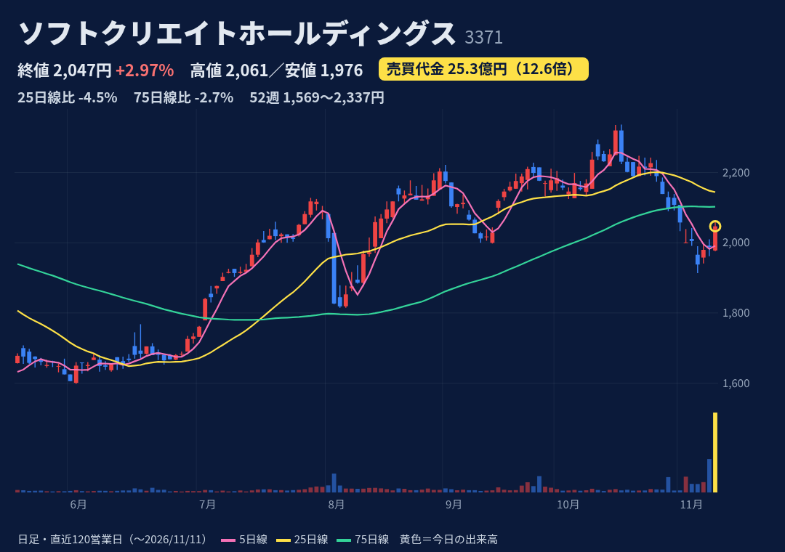
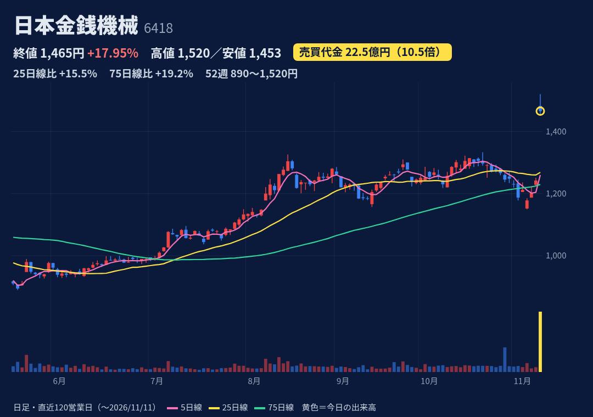
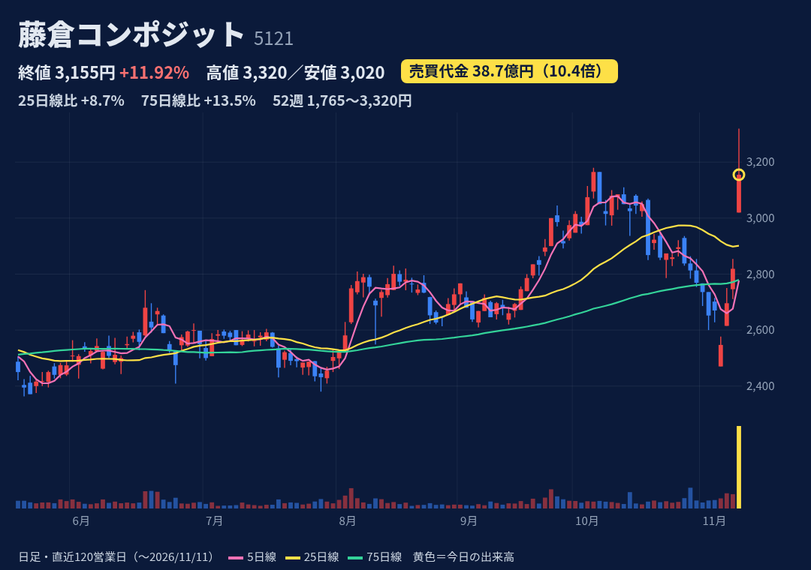
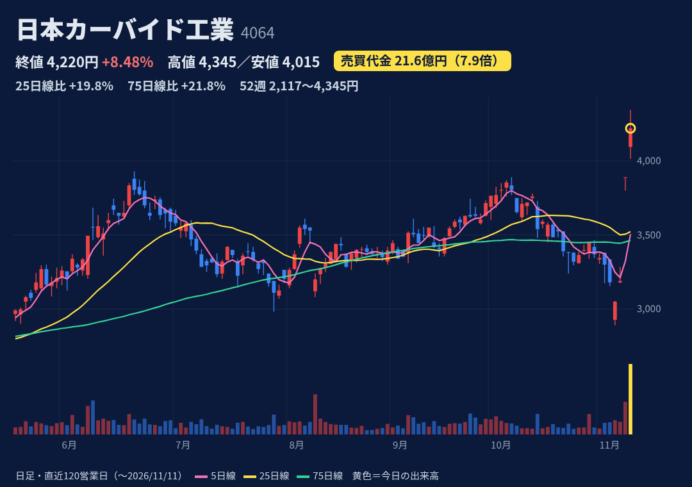
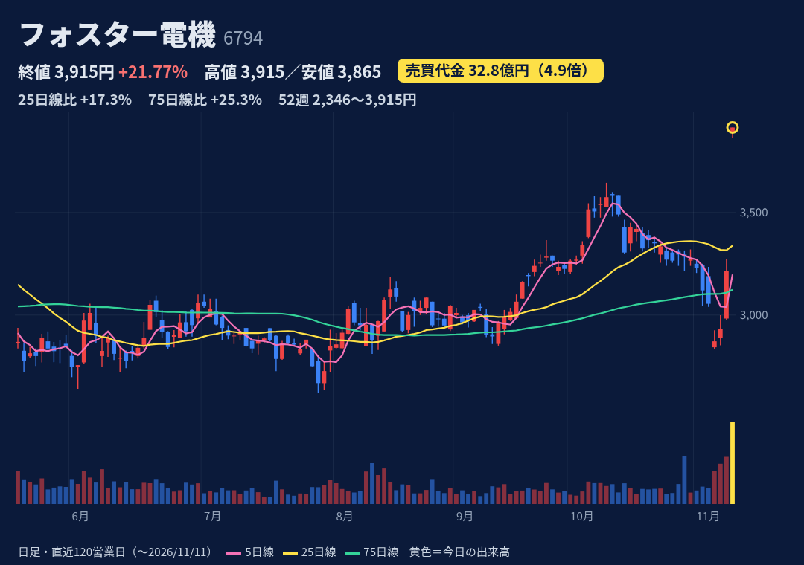
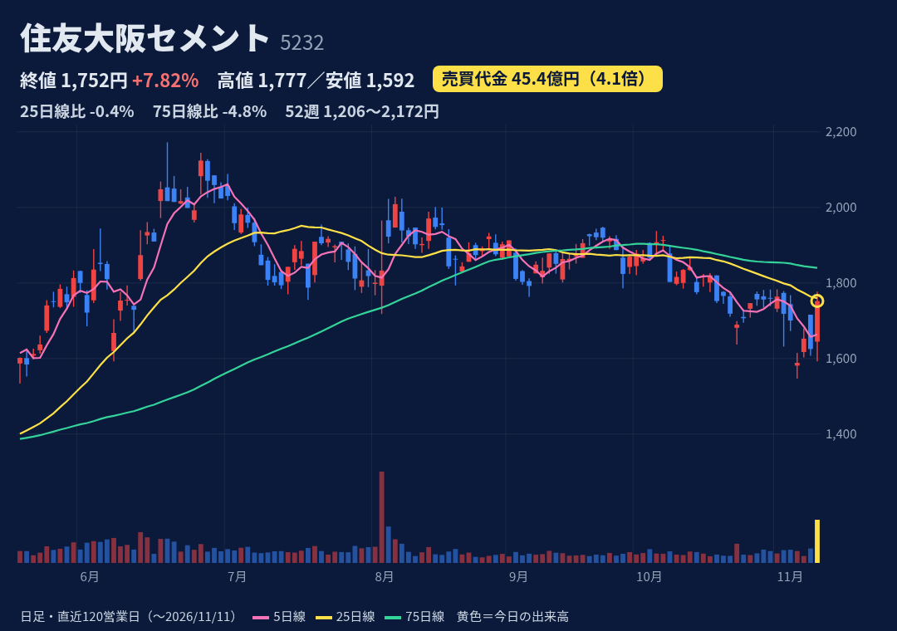

ITソリューション（SI・クラウド）とECサイト構築パッケージが主力。
11/10 16:40開示：大株主の売却意向による立会外分売130.8万株（約5%）を11/11に1,929円で実施・終了。TOB・MBO・親子上場解消等の開示は確認できず。株価上昇の理由も確認できず。
上期（11/2発表）売上182.6億円(+10.6%)・営業益31.2億円(+13.7%)。通期予想 売上370億・営業益63億円(+1.5%)据え置き、進捗49%。次回3Q日程は未発表（前年は2/2）。
始1,978→高2,061→終2,047の陽線、上ヒゲ小。52週高2,337(10/19)・安1,569で位置62%。25日線-4.5%、75日線-2.7%と下。売買代金4倍超は過去1年7回と多く、多くは下げた日。
11/6時点 買残77.1千株・売残199.5千株・倍率0.39倍。売残は10/30の3.4千株から急増（分売前のつなぎ売りの可能性＝推測）。日々公表・増担保とも該当なし（JPX 11/11確認）。
分売で取得した株の利益確定売り。大株主の残りの保有や今後の売却は未確認。11/10にも開示前に売買代金6.6倍（理由未確認）。

紙幣識別機・貨幣処理機。カジノ等のグローバルゲーミング向けに強み。
11/10 15:30開示：上期決算と通期上方修正（営業益30→49億円、純利益23→39億円）、期末配当23→50円（年46→73円）。ゲーミング向け主力製品が好調。純利益には投資有価証券売却益を含む。
上期 売上205.9億円(+39.4%)・営業益27.5億円(3.4倍)。通期 売上390億据え置き、営業益49億円(前期比+96%)、進捗56%。株探試算で下期経常は前年同期比9%減。次回日程は未発表（前年3Qは2/6）。
始1,482(+19.3%窓)→高1,520→終1,465の陰線、高値から-3.6%。52週高値を更新（位置91%）。25日線+15.5%、75日線+19.2%。2/9の+10.8%急伸は20日後ほぼ横ばいだった。
11/6時点 買残240.4千株・売残52.6千株・倍率4.57倍。買残は10/16の172千株台から増加傾向。日々公表・増担保とも該当なし（JPX 11/11確認）。
純利益は特別利益込み、米関税還付分を顧客に返金し売上は横ばい予想。下期は減益計算。初日から陰線で戻り売りの可能性。

産業用資材・ゴム引布、ゴルフ用カーボンシャフト（VENTUS等）。フジクラ系。
11/10 15:30開示：上期上振れと通期上方修正（営業益54→68億円、純利益38→50億円で一転増益）、配当年86→140円（中間・期末各70円）。北米VENTUS好調、価格適正化。円安効果も含むと会社説明。
上期 売上225.9億円(+11.6%)・営業益39.9億円(+48.7%)。通期 売上442億円・営業益68億円(+40.5%)、進捗59%。株探は経常最高益予想と報道。次回日程は未発表（前年3Qは2/13）。
始3,020(+7.1%)→一時S高3,320→終3,155、上ヒゲ5%。52週高値を更新（位置89%）。25日線+8.7%、75日線+13.5%。11/6の2,547円から3日で+24%。過去1年で売買代金4倍超は1回のみ。
11/6時点 買残44.8千株・売残46.9千株・倍率0.96倍と売り買い拮抗。日々公表・増担保とも該当なし（JPX 11/11確認）。
上振れの一部は想定を超える円安による（会社開示）。ゴルフシャフト需要の変動。決算前の11/9・11/10にも+5%前後上げていた（理由未確認）。

化学中堅。電子・機能製品（半導体・電子部品向け）、フィルム・シート、建材など。
11/9 16:00開示：上期決算と通期上方修正（営業益45→57億円、純利益31→38億円）、期末配当67→96円（年163円）。製品価格改定・高付加価値品・円安。11/10はS高、今日はその2日目。今日の新規開示は確認できず。
上期 売上261.3億円(+7.7%)・営業益28.5億円(+35.9%)。通期 売上520億据え置き、営業益57億円(+39.2%)、進捗50%。下期も生成AIデータセンター向け堅調見込み。次回は未発表（前年3Qは2/6）。
始4,095→高4,345→終4,220の陽線、上ヒゲ3%。11/10 S高(+21.9%)に続く2日目で、3,190円から2日で+32%。52週高値更新（位置94%）。25日線+19.8%、75日線+21.8%と乖離大。
11/6時点 買残77.5千株・売残3.0千株・倍率25.83倍と買い偏重。日々公表・増担保とも該当なし（JPX 11/11確認）。
2日で3割超上昇し、移動平均からの乖離が大きい。信用倍率25倍台で戻り売り要因。上振れは円安・価格改定の寄与あり。

車載用スピーカー・ヘッドホン等の音響機器OEM。全量海外生産。
11/10 20:00開示：中計2031（2031年度 売上2,200億・営業利益率7%・ROE約14%）、配当性向110%を前倒し採用し年配当115→245円。韓国上場子会社ESTecを約87億円でTOB（完全子会社化）。物言う株主の関与はみんかぶ報道。
上期 売上734.9億円(+10.3%)・営業益31.3億円(-27.8%)。通期 売上1,400億・営業益80億円(+4.3%)据え置き、進捗39%。7-9月は前年比-0.7%まで改善（フィスコ）。次回は未発表（前年3Qは2/10）。
S高3,915円で高値引け（始3,890）。11/10も開示前の日中に+9.6%（理由未確認）で、2日で+33%。52週高値更新、25日線+17.3%、75日線+25.3%。過去1年で売買代金4倍超はゼロで異例の商い。
11/6時点 買残971.4千株・売残56.6千株・倍率17.16倍。買残は今日の出来高(84万株)を上回る水準。日々公表・増担保とも該当なし（JPX 11/11確認）。
配当は配当性向連動で利益次第（上期は減益、通期進捗39%）。買残が重く倍率17倍。ESTec TOBは約87億円の資金負担。

セメント大手。半導体製造装置向け電子材料（静電チャック）など高機能品も。
11/11 14:30開示（場中）：上期上振れ、通期純利益100→115億円に上方修正（政策保有株売却益）、営業益150億円は据え置き。自社株買い 上限350万株(3.68%)・50億円（11/12〜3/31）。開示後に急伸。
上期 売上1,151億円(+8.8%)・営業益61.5億円(+49.2%)。通期 売上2,410億、営業益150億円(+9.9%)据え置き、進捗41%。株探試算で下期経常は前年同期比17%減。次回は未発表（前年3Qは2/10）。
14:30開示後に急伸、高1,777・終1,752。10/1に1→3分割。52週高2,172(6/18)・安1,222で位置56%。25日線とほぼ同値、75日線-4.8%。5月の2日連騰(+11.7%,+12.3%)後は5日で-6.6%。
11/6時点 買残602.3千株・売残44.7千株・倍率13.47倍。買残は10/30の520.9千株から増加。日々公表・増担保とも該当なし（JPX 11/11確認）。
上方修正は最終益のみで、政策保有株売却益という一過性要因。セメント国内需要減・エネルギーコスト増で下期は減益計算。信用買残が積み上がっている。
株価・出来高・信用残：取引所データ。材料：各社開示・各社報道。